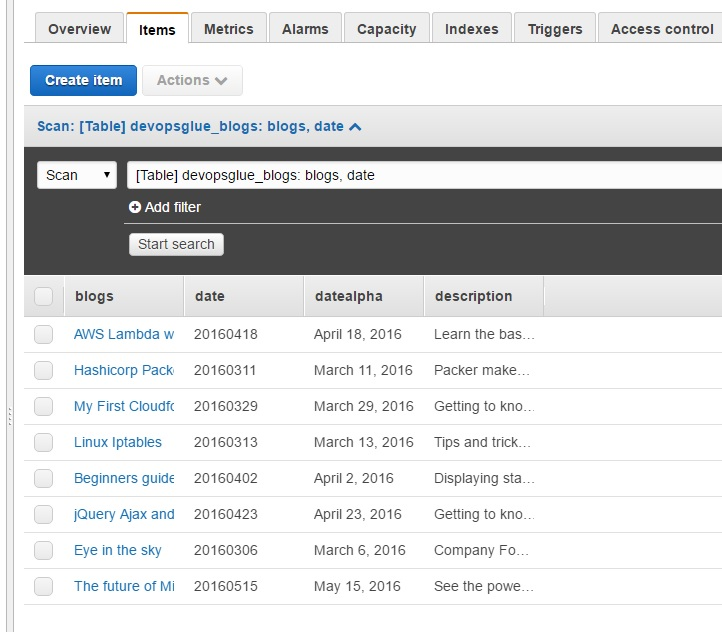
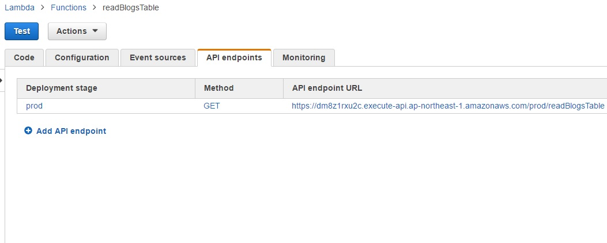
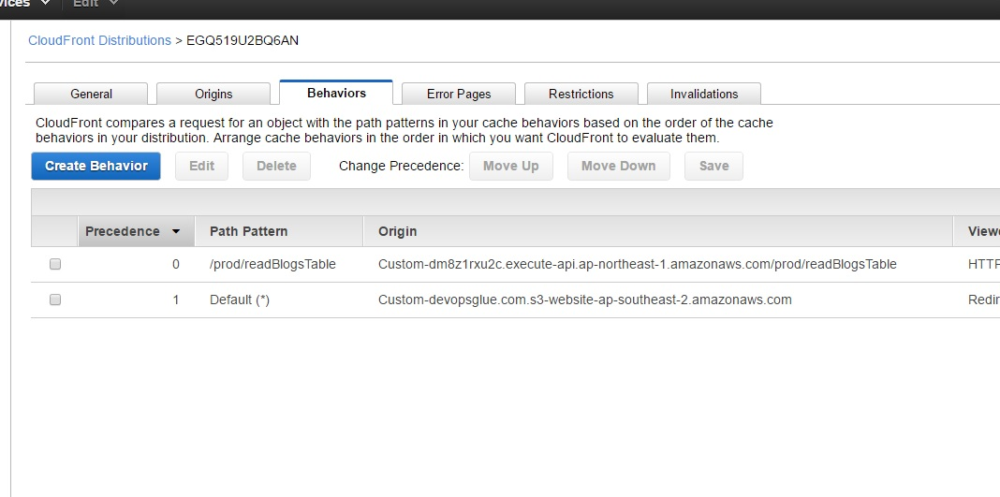
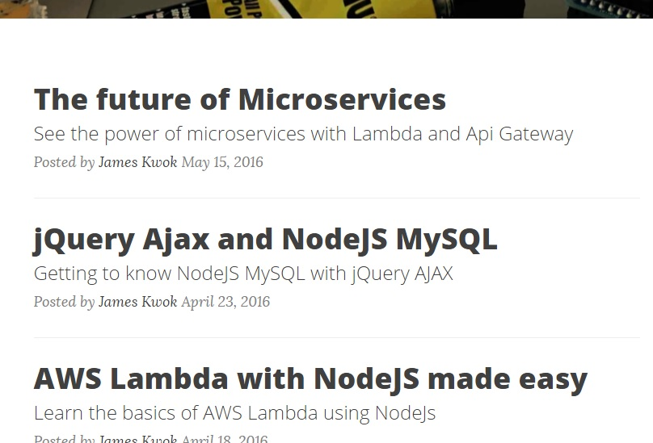

Microservices is a whole new way to think about writing code. Previously many developers would entangle html print statements in their backend, you'll see this prevalent in some backend languages such as php (including some of these tutorials on this site). Imagine if the backend were written as a REST API and all your components/products interacted with one another via an API. For one, this would severely reduce the need for a complex and often expensive ESB and you would be able to upgrade the components independently of one another. The frontend would use ajax to call the backend APIs and manipulate the json into a html format. This means the backend no longer returns any html and there is a major advantage to this. For example the backends themselves could be written in different languages or if in java, run on different JDK versions in contrast to a monolithic build. Monolithic builds still have their place as they are much simplier to maintain as they could call one anothers datastore directly (eg one service directly accessing another's database). However with microservcies the rule of thumb is one service can never access another's datastore directly and can only extract data through the given service's APIs.
This tutorial aims to create a microservice that calls Dynamo DB to extract a list of current blogs for this site and display them using the frontend to render the json into html. We will explore the use of multiple origins to get around Cross domain problems on Cloudfront, API gateway so we have an endpoint for our service, Lambda function do have some logic and of course Dynamo DB which will be our designated datastore.
Martin Fowler has an amazing presentation on MicroServices:
Step 1: Create and populate the dynamoDB table.
The dynamoDB table is where we will store the blog dates, title, description and date as a string. DynamoDB is a NoSQL database so you cant use SQL to extract the data, however you can add attributes to records at anytime and it scales very well. You pay for what you actually use instead of an entire server like in AWS RDS.
Dynamo Table
{kind=link}
Step 2: Create Lambda function to interface with DynamoDB table.
To create the microservice, you will need a lambda function to pull the data from DynamoDB. This is simply written in Node using the Dynamo API and is very straight forward. You will need atleast 3 seconds of execution time just incase. Wile the function itself could be coded to sort the table contents, it is more efficient to use the client side to do this, a few milliseconds of sexecution time will add up in the grand scheme of things. Both the Dynamo table and lambda function must reside in the same region, since lambda is only available in a few regions, we have chosen the AWS Tokyo region to host both of these for us.
Lambda function to read DynamoDB table (readBlogTable):
console.log('Loading event'); var AWS = require('aws-sdk'); var dynamodb = new AWS.DynamoDB(); exports.handler = function(event, context,callback) { var tableName = "devopsglue_blogs"; dynamodb.scan({ TableName : tableName, Limit : 10 }, function(err, data) { if (err) { context.done('error','reading dynamodb failed: '+err); } callback(null, data); }); };
Step 3: Create API gateway Endpoint.
Now that we have a lambda function we need to bind this function to an api endpoint. This endpoint will not match our hosted domain but thats okey for now, we will use cloudfront to mask this endpoint later on.
API endpoint
{kind=link}
Step 4: Establish a CloudFront frontend with multiple origins.
AJAX has qwuirk where you cannot use it to call cross domains which is a security feature, however our AWS API endpoint is unfortunately another domain and thus our AJAX call will fail. Cloudfront can take multiple origins, we route traffic with a path pattern of '/prod/readBlogsTable' to our endpoint and everything else back to our s3 origin (where this site is hosted). Therefore the endpoint will now carry our hosted domain as its domain 'devopsglue.com'. In the code I've intentionally left this as a relativepath in the URL part of the AJAX call since this cloudfront distribution can accept many CNAMES such as blogs.devopsglue.com. Whatever the domain this is used to access this site, the ajax call will work regardless due to the multiple origin routing we have in place. The caveat here is the routing must actually exist so you can't really say route all /api/* traffic to that endpoint and not have /api path exist in our api path '/prod/readBlogsTable'. Cloudfront unfortuantely cannot substitute paths while routing which would have been a nice feature.
Multiple origin with routing
{kind=link}
Step 5: Code the frontend to transform json to html.
The below code uses a for loop in javascript to render the json object returned by ajax. The html is printed and the code dives deep into the json to extract the attributes of the records. However we want to sort all the records by date which is an embedded attribute. How do we do this? We use the custom function predicatBy and toggle the -1 and 1 to sort by ascending or descending order.
Frontend AJAX with Javascript to transform and sort json into html:
function getBlogList() { $.ajax({ url : "prod/readBlogsTable", type: "GET", success: function(data, textStatus, jqXHR) { //var json = JSON.parse(data); var html = " "; var json = data; var nblog = json["Count"]; json["Items"].sort(predicatBy("date")); for (i = 0; i < nblog; i++) { html += '<div class="post-preview">'; html += '<a href="blogs/' + json["Items"][i]["date"]["S"] + '.html">'; html += '<h2 class="post-title">'; html += json["Items"][i]["blogs"]["S"]; html += '</h2>'; html += '<h3 class="post-subtitle">'; html += json["Items"][i]["description"]["S"]; html += '</h3>'; html += '</a>'; html += '<p class="post-meta">Posted by <a href="blogs/' + json["Items"][i]["date"]["S"] + '.html">James Kwok </a>' + json["Items"][i]["datealpha"]["S"] + '</p>'; html += '</div>'; html += '<hr>'; } $('#blogs').html(html); }, error: function (jqXHR, textStatus, errorThrown) { $('#blogs').html("Damn it's broken!"); } }); } function predicatBy(prop){ return function(a,b){ if( a[prop]["S"] > b[prop]["S"]){ return -1; }else if( a[prop]["S"] < b[prop]["S"]){ return 1; } return 0; }
Dynamic Menu (finished product used for this site):
{kind=link}
Java Spring Boot
While we have looked at NodeJS as a microservcie bankend, we can use JAVA with the spring boot framework to create the backend for those wishing to have a more traditional server backend setup. Spring boot comes with tomcat built right in, which drastically reduces the complexity of deployment. Like the Spring 4.0 framework that it is based on, it comes with many MVC goodies like URL routing to route different service requests to different service logic. Maven or Gradle will greatly assist in compilation, so be sure to use either one. Watch this space for a more detailed Spring boot write up.